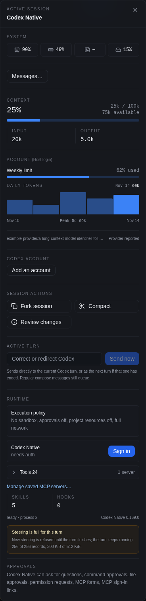
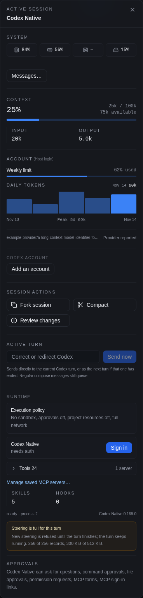
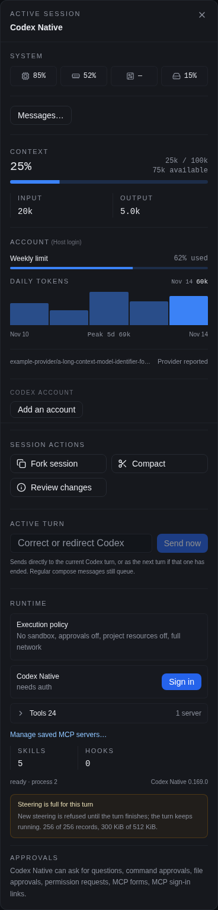
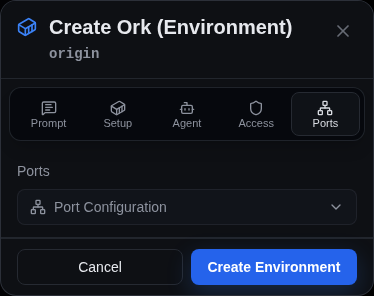
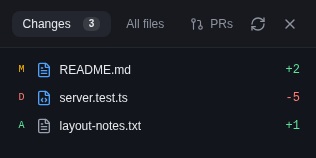
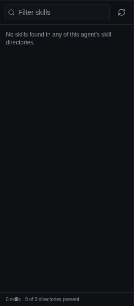
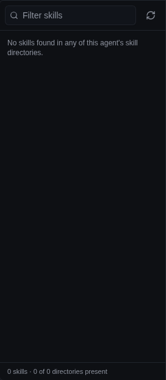

Design tasks / 00009
00009 · Raise state and label text to 11px in agent info, environments and lists
Problem
AgentInfoButton.panels.tsx has 17 uses of text-[10px] and
AgentInfoButton.tsx has 9. The create-environment mobile tab labels
(CreateEnvironmentDialog.tsx:173), the changed-file status letter
(ChangeFileRowItem.tsx:111) and several settings lists
(SkillsSettings, AgentPluginsBrowser,
MachineAgentAccountsSection, GraphLibraryList) do the same.
muted-foreground (6.1:1) is the floor for text a user reads to understand
state.
Find every instance
grep -rnE --include=*.tsx "text-\[10px\]" apps/web/src | grep -v "\.test\." | grep -v "components/design\|annotations"Scope
| Where | What |
|---|---|
apps/web/src/components/layout/AgentInfoButton.panels.tsx |
17 uses |
apps/web/src/components/layout/AgentInfoButton.tsx |
9 uses |
apps/web/src/components/environments/CreateEnvironmentDialog.tsx:173
|
mobile tab labels (10px) |
apps/web/src/components/files-panel/ChangeFileRowItem.tsx:111 |
status letter |
apps/web/src/components/graph-designer/GraphLibraryList.tsx |
6 uses |
apps/web/src/components/settings/SkillsSettings.tsx |
4 uses |
apps/web/src/components/settings/machines/MachineAgentAccountsSection.tsx
|
4 uses |
apps/web/src/components/agent-mail/AgentMailPanel.tsx |
4 uses |
apps/web/src/components/sidebar/ProjectSearchBar.tsx |
3 uses |
Approach
- Classify every use in these files in Notes (metadata, count in a filled pill, state or label).
- Raise state or label uses to 11px; where a row would then overflow, shorten the label or let it truncate with a title rather than shrinking the type.
- Check the narrow viewport for wrapping in the agent info popover and the create-environment tabs.
Required evidence: before and after
Every slot needs a before image (captured first, before editing any code) and an
after image. Use the same profile, fixture data, theme, viewport and zoom for both.
Save PNGs under design/images/00009/ using the exact file names shown. See
How to capture.
Agent info popover, all panels desktop 1440×900
Open Agent Info with populated usage and a running turn, then capture each panel.


Agent info popover, all panels narrow 390×844
Reload at 390px, open Agent Info with the same session fixture, and capture each panel.

Create environment dialog mobile tabs narrow 390×844
Open the dialog from a fixture project and select Ports in the five-tab container layout.

Files panel with changed-file rows desktop 1440×900
Modify a few files in a fixture environment.

Skills settings list desktop 1440×900
Open Settings → Skills.


Out of scope
- Design inspector and annotations (task 00008).
- 9px badges (task 00010).
Verification
mise run test:logged -- --name web-typecheck -- bun run --cwd apps/web typecheck
NODE_ENV=test mise run test:logged -- --name layout-env -- bun --cwd=apps/web test src/components/layout src/components/environments --parallel=2 --only-failures
mise run format:check
mise run lint
React tests in this repo need NODE_ENV=test in build shells. Real-browser
check: use a throwaway dev:test profile named design-00009, never
a production instance.
Acceptance checklist
-
Before images captured on unmodified code for every slot below, and committed
under
design/images/00009/. - After images captured after the change, with the same profile, data, theme, viewport and file names, and committed beside the before images.
- Every image slot on this page shows a picture (the evidence badge reads “10 / 10”).
- I have looked at each pair and written what changed, and anything that did not change that should have, in Notes.
- Hits were classified in Notes, and each decision below is recorded with the option chosen.
-
Type-check and the owning tests pass (commands below);
mise run format:checkandmise run lintpass. - The browser check includes a page reload and, for layout-affecting changes, the narrow viewport.
- DESIGN.md or PRODUCT.md updated if needed: None expected.
- Status set to Done on this page and in the index.
Notes
Classification
-
AgentInfoButton.panels.tsx— State and labels include System and Data unavailable, metric labels, runtime state, steering saturation and capacity, Daily tokens, daily and peak counts, reset timing, Account, Context, unavailable version or model, the two reporting qualifiers, Approvals, and Connection. Reference metadata includes metric detail, account identification, notice timestamps, bridge versions and process generations, unknown event kinds, chart dates, and model IDs. -
AgentInfoButton.tsx— State and labels include Active session, Execution profile, Session options, Session actions, Active turn, Background tasks, and Runtime. Fork and steering helper copy is supplementary metadata. -
CreateEnvironmentDialog.tsx— The mobile configuration tabs are navigation labels.ChangeFileRowItem.tsx— The status letter is state. Rename provenance and the change reason are outside the scoped status-letter change. -
GraphLibraryList.tsx— Trust, engine, compile state, compile counts, and read-only are state. The source path or template ID is metadata. -
SkillsSettings.tsx— Scan counts, scan progress and failure, and directory scan errors are state. Skill locations and paths are metadata. -
MachineAgentAccountsSection.tsx— Signed out, Preferred login signed out, No preferred login, and Preferred are state labels, including when shown on a colored background. -
AgentMailPanel.tsx— The plain message count is a label. The need you count is inside a filled pill. The message timestamp and the recipient's environment and project are metadata. -
ProjectSearchBar.tsx— Both availability markers are state, and the search keycap labels the keyboard shortcut.
Decisions
- Use 11px for state and labels. Apply the documented full muted-foreground token to the affected muted agent headings. Existing palette values and semantic status colors are preserved.
- Keep compact metadata and the filled mail count at 10px. This retains the hierarchy and density specified by the design. Where state shares a row with model IDs, runtime versions, or dates, size the state independently.
- Keep the existing mobile tab labels. On the 390px fixture, the labels fit without shortening. In the popover, existing wrapped explanatory copy and vertical scrolling accommodate the narrow viewport.
- Use the Scope table to define the change. The plugin browser appears in the original issue description. Design and annotation components and 9px badges have their own tasks.
Image comparisons
- Desktop agent information at 1440 × 900. Context, Account, Daily tokens, Provider reported, and Active turn are visible with populated session data. The 11px steering capacity counts use weight 500, and the explanatory sentence uses regular weight.
- Narrow agent information at 390 × 844. The populated sections and steering readout fit without horizontal overflow after reload. The full model identifier is available in the truncated label’s tooltip.
- Mobile container environment dialog at 390 × 844. Prompt, Setup, Agent, Access, and Ports all render at 11px and fit on a single line. Access and Ports both open their panels.
- Changed files at 1440 × 900. The modified, deleted, and added status letters are 11px. The fixture filenames and line counts align in their existing columns.
- Skills settings at 1440 × 900. The scan summary is 11px and medium weight, including the zero counts shown by the isolated backend.
The Agent Info and container dialog pairs use the dark renderer on the headless
design-00009-review fixture profile at 100% scale, with the matching component
modules from 259e88d90 for the before captures. Playwright supplied the same
synthetic usage, quota, running turn, steering saturation, and Docker availability to each
version. No provider turn or container launch was needed. The Agent Info images combine
strips of the scrollable popover. Live system utilization can vary.
The changed-files and Skills pairs use the original design-00009 fixture
profile with b2c91abb9 as the before revision. The isolated backend suppresses
host skill discovery.